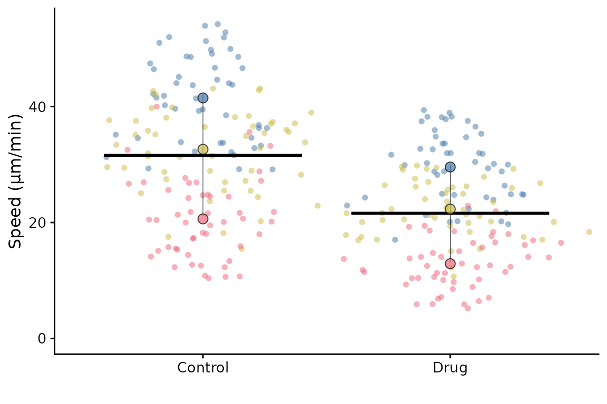
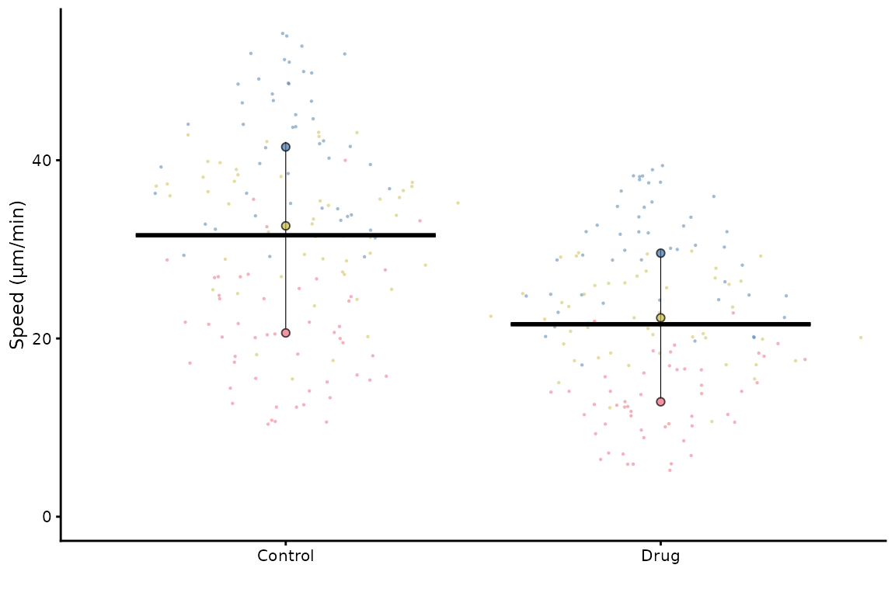
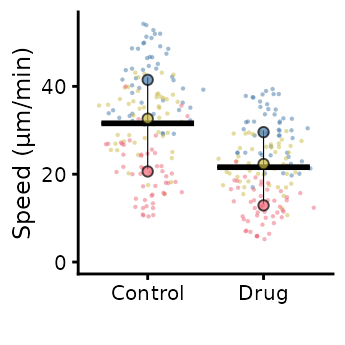
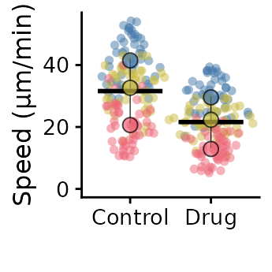
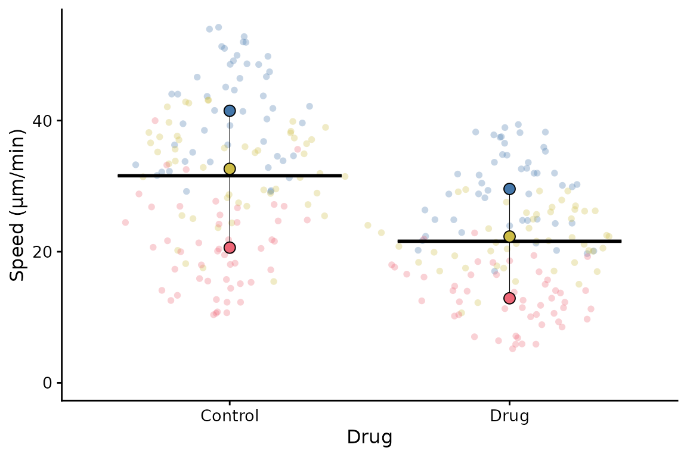
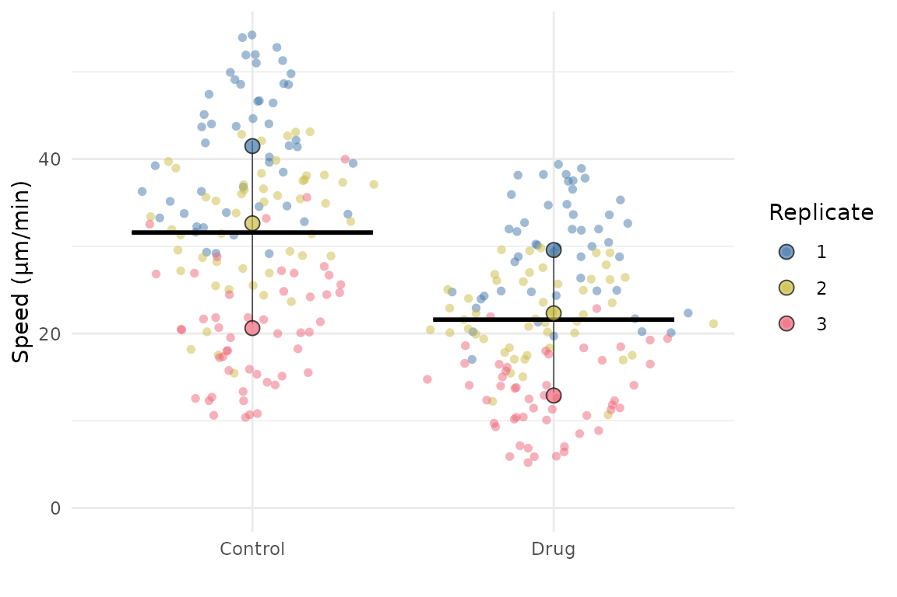
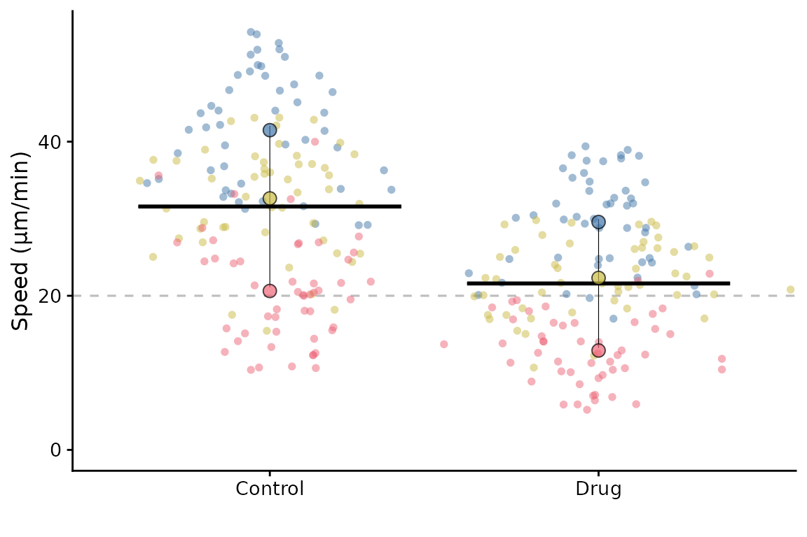
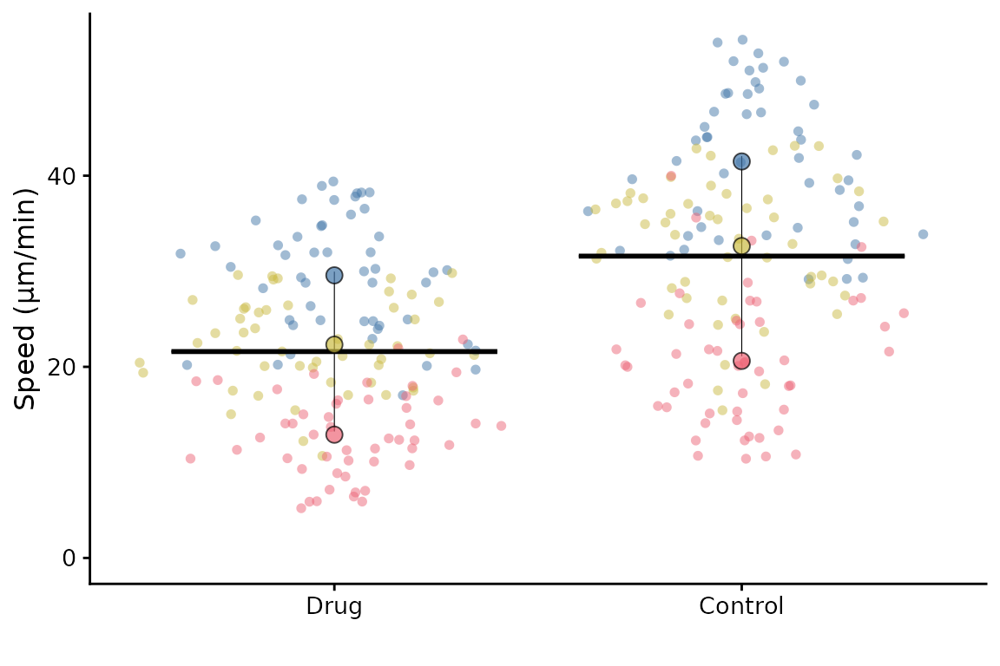
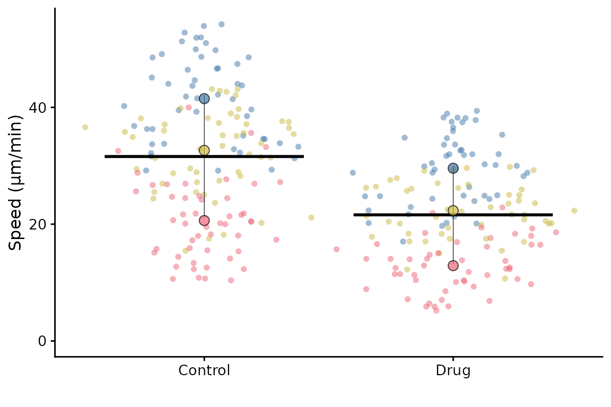

Advanced SuperPlots
In this vignette, we will explore some of the more advanced features of SuperPlotR.
But first, we need to deal with how to simply scale the plot so it looks good in your paper!
Sizing the SuperPlot
The default setting is to use point sizes of 2 for the data and 3 for the summary points. The font size is 12. This looks good in the RStudio viewer, but is not well suited to a figure which is likely to be very small.
library(SuperPlotR)
# the default plot
superplot(lord_jcb, "Speed", "Treatment", "Replicate", ylab = "Speed (µm/min)")
# the same plot but with custom sizing
superplot(lord_jcb, "Speed", "Treatment", "Replicate", ylab = "Speed (µm/min)",
size = c(0.8,1.5), fsize = 9)
This does not look great in the viewer, but it will look better in a figure.
library(ggplot2)
# the same plot but with custom sizing
superplot(lord_jcb, "Speed", "Treatment", "Replicate",
ylab = "Speed (µm/min)", size = c(0.8,1.5), fsize = 9)
ggsave("plot.pdf", width = 88, height = 50, units = "mm") # final sizeThis is preferable to
library(ggplot2)
# the same plot but with custom sizing
superplot(lord_jcb, "Speed", "Treatment", "Replicate",
ylab = "Speed (µm/min)")
ggsave("plot.pdf", width = 88, height = 50, units = "mm") # final sizeCustomising the SuperPlot
A couple of simple tweaks: an x label can be added, and the transparency of points can be altered like this.
superplot(lord_jcb, "Speed", "Treatment", "Replicate",
xlab = "Drug", ylab = "Speed (µm/min)", alpha = c(0.3,1))
SuperPlotR returns a ggplot object which can be customised how you like. For example, the theme can be overridden like this:
p <- superplot(lord_jcb, "Speed", "Treatment", "Replicate", ylab = "Speed (µm/min)")
p + theme_minimal()
It can also accept a ggplot object using the gg
parameter, and then add a SuperPlot to it (within reason!). For example,
you might want to plot something behind the SuperPlot.
p <- ggplot() +
geom_hline(yintercept = 20, linetype = "dashed", col = "grey")
superplot(lord_jcb, "Speed", "Treatment", "Replicate", ylab = "Speed (µm/min)", gg = p)
Ordering the x-axis
This is best done by reordering the levels of the factor in the input
dataframe before calling superplot.
df <- lord_jcb
df$Treatment <- factor(df$Treatment, levels = c("Drug", "Control"))
superplot(df, "Speed", "Treatment", "Replicate", ylab = "Speed (µm/min)")
It is also possible to reorder the Replicates using a similar
strategy. You might want to do this so that the order of colours and
shapes matches a different order to the default. Another way to achieve
the same thing is to supply a reordered colour palette to
superplot.
Getting information about your SuperPlot
Having made your SuperPlot, you might want to know a bit more about it. For example, you might wonder which replicate is which or perhaps you received a warning that some replicates are missing some conditions.
You can set the option info = TRUE when you call
superplot to get more detailed information.
superplot(lord_jcb, "Speed", "Treatment", "Replicate", ylab = "Speed (µm/min)",
info = TRUE)
#> SuperPlot information
#> =====================
#> Number of conditions: 2
#> Number of replicates: 3
#> Number of data points: 300
#> Number of summary points: 6
#> =====================
#> Colour palette: tol_bright
#> Data distribution: sina
#> Summary statistic: rep_mean
#> No bars
#> X-axis label:
#> Y-axis label: Speed (µm/min)
#> Point sizes: 2 (individual), 3 (summary)
#> Alpha for points: 0.5 (individual), 0.7 (summary)
#> Font size: 12
#> No statistics
#> =====================
#> Colours for replicates: #4477AA, #CCBB44, #EE6677
#> Shapes for replicates: 21, 21, 21
#> =====================
#> Summary statistics:
#> # A tibble: 6 × 6
#> Treatment Replicate rep_mean rep_median sp_colour sp_shape
#> <chr> <fct> <dbl> <dbl> <fct> <fct>
#> 1 Control 1 41.5 41.7 #4477AA 21
#> 2 Control 2 32.6 34.4 #CCBB44 21
#> 3 Control 3 20.6 20.3 #EE6677 21
#> 4 Drug 1 29.6 30.1 #4477AA 21
#> 5 Drug 2 22.3 21.9 #CCBB44 21
#> 6 Drug 3 12.9 12.6 #EE6677 21
When this is set, the SuperPlot will contain a legend, otherwise, the
legend is not shown by default. This is because the legend is not very
useful in most cases, as the colours and shapes are already shown in the
plot. However, if you want to see the legend, you can either set
info = TRUE or use the append one the output using
+ theme(legend.position = "right").
Retrieving the summary data
If you need to retrieve the summary data used to create the
SuperPlot, you can use the get_sp_summary function. This
will return a data frame with the summary data used to create the
SuperPlot.
summary_data <- get_sp_summary(lord_jcb, "Speed", "Treatment", "Replicate")
head(summary_data)
#> # A tibble: 6 × 4
#> Treatment Replicate rep_mean rep_median
#> <chr> <int> <dbl> <dbl>
#> 1 Control 1 41.5 41.7
#> 2 Control 2 32.6 34.4
#> 3 Control 3 20.6 20.3
#> 4 Drug 1 29.6 30.1
#> 5 Drug 2 22.3 21.9
#> 6 Drug 3 12.9 12.6Finding representative datapoints
If you want to find the representative datapoints for each condition,
then you can use the representative() function. This is
handy if the data come from a set of images and you’d like to show a
representative image in the figure.
The function returns a data frame with the datapoints ranked by
closeness to the summary of each replicate or condition (see
?representative for more information). It also prints the
top ranked datapoint to the console.
representative_data <- representative(lord_jcb, "Speed", "Treatment", "Replicate")
#> # A tibble: 6 × 6
#> Treatment Replicate Speed rowno diff rank
#> <chr> <chr> <dbl> <int> <dbl> <int>
#> 1 Control 1 41.5 5 0.0524 1
#> 2 Control 2 32.9 98 0.220 1
#> 3 Control 3 20.7 124 0.0541 1
#> 4 Drug 1 29.4 178 0.217 1
#> 5 Drug 2 22.3 207 0.000237 1
#> 6 Drug 3 12.9 285 0.0113 1
head(representative_data)
#> # A tibble: 6 × 6
#> Treatment Replicate Speed rowno diff rank
#> <chr> <chr> <dbl> <int> <dbl> <int>
#> 1 Control 1 41.5 5 0.0524 1
#> 2 Control 1 41.4 13 0.0875 2
#> 3 Control 1 41.9 2 0.366 3
#> 4 Control 1 42.2 31 0.688 4
#> 5 Control 1 40.2 26 1.26 5
#> 6 Control 1 39.6 36 1.86 6In this example, the dataset has no label column, so the row number
is used as the label. If you have a label column, you can specify it
using the label parameter. The label could be a filename or
other identifier to identify where the datapoint came from.
# Assuming lord_jcb has a column "FileName" with the labels
example <- lord_jcb
example$FileName <- paste0("Image_", seq_len(nrow(example)), ".tif")
representative_data <- representative(example, "Speed", "Treatment", "Replicate",
label = "FileName")
#> # A tibble: 6 × 6
#> Treatment Replicate Speed FileName diff rank
#> <chr> <chr> <dbl> <chr> <dbl> <int>
#> 1 Control 1 41.5 Image_5.tif 0.0524 1
#> 2 Control 2 32.9 Image_98.tif 0.220 1
#> 3 Control 3 20.7 Image_124.tif 0.0541 1
#> 4 Drug 1 29.4 Image_178.tif 0.217 1
#> 5 Drug 2 22.3 Image_207.tif 0.000237 1
#> 6 Drug 3 12.9 Image_285.tif 0.0113 1